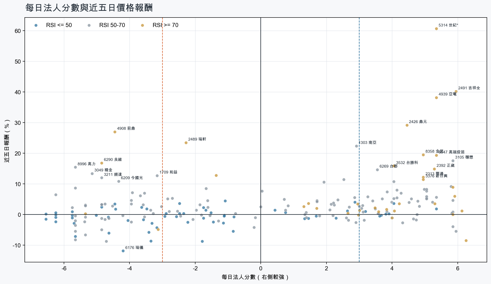
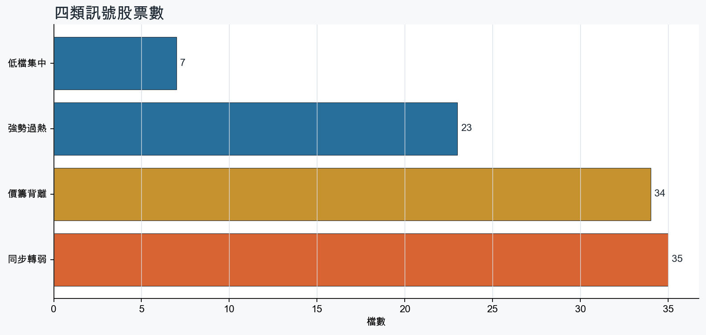
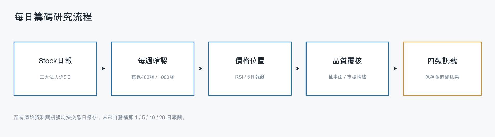
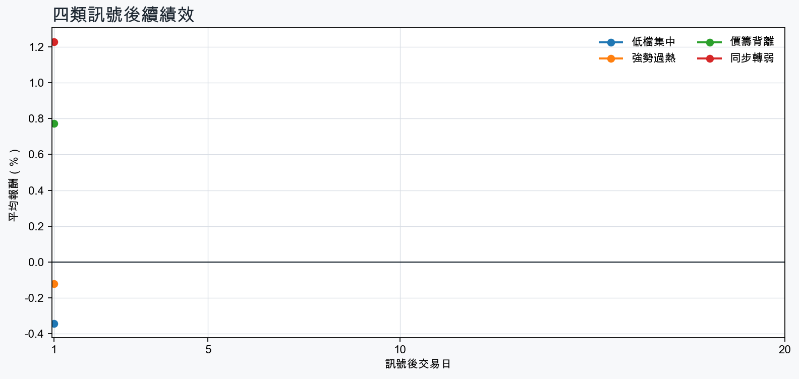

市場情緒偏多
近5日法人合計+1,545,644 張
篩選池上漲比例64.5%
籌碼好 / RSI低7 檔
籌碼差 / 價跌15 檔



01
籌碼好 / RSI低
優先研究基本面；法人續買且價格止穩時，才適合分批觀察。
| 股票 / 建議 | 每日法人分 | RSI / 價格 | 每週集保確認 | 基本面 | 近期消息 |
|---|---|---|---|---|---|
| 3260 威剛優先觀察 | +4.0法人 +4,158 張 / 2 天 | 49.85日 +3.6% | +2.32 pp1000張 +3.00 pp | 單月營收年增 +331.3%；累計營收年增 +206.7%；上半年 EPS 62.46仍需觀察下一期財報延續性來源：公開資訊觀測站 | 近期沒有通過股票語境篩選的新聞 |
| 6177 達麗優先觀察 | +5.3法人 +5,744 張 / 4 天 | 44.15日 +1.8% | -0.30 pp1000張 -0.01 pp | 單月營收年增 +470.0%；累計營收年增 +637.8%；上半年 EPS 5.03仍需觀察下一期財報延續性來源：公開資訊觀測站 | 近期沒有通過股票語境篩選的新聞 |
| 5880 合庫金優先觀察 | +3.2法人 +17,426 張 / 5 天 | 41.85日 +1.0% | +0.47 pp1000張 +0.55 pp | 單月營收年增 +20.4%；累計營收年增 +17.6%仍需觀察下一期財報延續性來源：公開資訊觀測站 | 近期沒有通過股票語境篩選的新聞 |
| 2646 星宇航空優先觀察 | +3.7法人 +6,895 張 / 5 天 | 45.55日 -0.2% | +0.23 pp1000張 +0.17 pp | 單月營收年增 +42.8%；累計營收年增 +32.0%上半年 EPS -0.11；上半年營益率 1.8%來源：公開資訊觀測站 | 近期沒有通過股票語境篩選的新聞 |
| 2892 第一金優先觀察 | +3.8法人 +66,989 張 / 5 天 | 29.65日 +0.2% | +0.19 pp1000張 +0.21 pp | 單月營收年增 +2.4%；累計營收年增 +18.6%仍需觀察下一期財報延續性來源：公開資訊觀測站 | 配息能力大增。第一金隱含殖利率拚前段班- 新聞MoneyDJ · 08/27第一金法說1》談「公公併、公民併」保持開放 總座方螢基揭3大評估原則Yahoo股市 · 08/27 |
| 2912 統一超優先觀察 | +3.9法人 +5,078 張 / 5 天 | 48.95日 +0.2% | -0.97 pp1000張 -0.75 pp | 單月營收年增 +8.5%；累計營收年增 +5.6%；上半年 EPS 6.03上半年營益率 4.2%來源：公開資訊觀測站 | 近期沒有通過股票語境篩選的新聞 |
| 2886 兆豐金優先觀察 | +3.6法人 +62,044 張 / 5 天 | 26.85日 -0.5% | +0.00 pp1000張 -0.01 pp | 單月營收年增 +4.1%；累計營收年增 +16.7%仍需觀察下一期財報延續性來源：公開資訊觀測站 | 兆豐金法說1》談明年股利 總座張傳章：現金為主Yahoo股市 · 08/27兆豐金上半年EPS 1.44元 非銀行子公司獲利貢獻倍增至28％ETtoday財經雲 · 08/27 |
02
籌碼好 / RSI高
趨勢強但不追價，等待量縮、RSI降溫或回測支撐。
| 股票 / 建議 | 每日法人分 | RSI / 價格 | 每週集保確認 | 基本面 | 近期消息 |
|---|---|---|---|---|---|
| 1815 富喬等拉回，不追價 | +5.8法人 +70,636 張 / 4 天 | 83.35日 +8.9% | +8.82 pp1000張 +7.89 pp | 單月營收年增 +68.1%；累計營收年增 +46.9%；上半年 EPS 2.24仍需觀察下一期財報延續性來源：公開資訊觀測站 | 富喬(1815)站上118元，玻纖布報價能否續漲？-葉博金融研究院CMoney投資網誌 · 08/271815 富喬- [新聞]AI狂潮燒進玻纖布！富喬飆9%衝119元、南 - 股市爆料同學會CMoney · 08/27 |
| 2615 萬海等拉回，不追價 | +5.8法人 +46,487 張 / 4 天 | 75.85日 +0.0% | +2.98 pp1000張 +3.15 pp | 單月營收年增 +50.1%；累計營收年增 +12.8%；上半年 EPS 6.84仍需觀察下一期財報延續性來源：公開資訊觀測站 | 外資瘋狂上船！ 陽明、萬海、長榮全進榜 「這族群」卻被倒爆Yahoo股市 · 08/24【Follow法人】外資掃貨陽明萬海等貨櫃三雄破萬張 反手倒貨台塑四寶合計逾8萬張Yahoo股市 · 08/24 |
| 6108 競國等拉回，不追價 | +6.2法人 +3,837 張 / 5 天 | 70.85日 -8.5% | +3.41 pp1000張 +4.11 pp | 單月營收年增 +63.2%；累計營收年增 +28.7%；上半年 EPS 0.32上半年營益率 -8.0%來源：公開資訊觀測站 | 【競國法說會重點內容備忘錄】未來展望趨勢 20260825富果直送 · 08/25【13:24 即時新聞】競國(6108)股價上攻至23.85元、上漲4.84%，資產處分與營收成長題材引資金迴流＋中期多頭結構延續、法人與主力籌碼偏多CMoney投資網誌 · 08/27 |
| 3037 欣興等拉回，不追價 | +5.3法人 +10,480 張 / 5 天 | 79.25日 +3.5% | +2.68 pp1000張 +2.27 pp | 單月營收年增 +43.7%；累計營收年增 +30.8%；上半年 EPS 11.70仍需觀察下一期財報延續性來源：公開資訊觀測站 | 3037 欣興- 輝達FY27Q2 財報全解析：翻倍成長之外，真正該看的是三個數字- 股市爆料同學會CMoney · 08/27三大法人買賣超 – 外資買超(3037)欣興、(2881)富邦金，投信買超(1303)南亞、(2059)川湖，法人合計賣超53.36億元sinotrade.com.tw · 08/26 |
| 2426 鼎元等拉回，不追價 | +4.5法人 +8,466 張 / 3 天 | 74.75日 +29.1% | +4.75 pp1000張 +4.05 pp | 單月營收年增 +36.3%；累計營收年增 +2.3%；上半年 EPS 0.28上半年營益率 5.8%來源：公開資訊觀測站 | 鼎元獲利／自結7月EPS 0.124元 稅後純益3740萬元UDN · 08/27鼎元(2426)爆量換手！7月EPS暴增6倍、攻1.6T光通訊，千倍PE多空全解析理財周刊 · 08/27 |
| 2542 興富發等拉回，不追價 | +4.0法人 +11,581 張 / 4 天 | 74.85日 -1.1% | +1.93 pp1000張 +2.14 pp | 單月營收年增 +196.6%；累計營收年增 +404.3%；上半年 EPS 2.45仍需觀察下一期財報延續性來源：公開資訊觀測站 | 近期沒有通過股票語境篩選的新聞 |
| 2313 華通等拉回，不追價 | +5.0法人 +20,047 張 / 3 天 | 74.15日 +12.2% | +0.83 pp1000張 +1.03 pp | 單月營收年增 +16.0%；累計營收年增 +13.6%；上半年 EPS 2.50仍需觀察下一期財報延續性來源：公開資訊觀測站 | 華通泰國新廠量產 今年獲利成長20%理財周刊 · 08/27【即時新聞】華通受惠蘋果新品發表會題材發酵，挾雙題材強勢亮燈漲停CMoney投資網誌 · 08/27 |
| 2392 正崴等拉回，不追價 | +5.3法人 +4,412 張 / 4 天 | 77.15日 +14.9% | +1.99 pp1000張 +1.78 pp | 單月營收年增 +32.8%；上半年 EPS 12.56累計營收年增 -5.0%；上半年營益率 1.8%來源：公開資訊觀測站 | 2392 正崴 - 算力就是收入 - 股市爆料同學會CMoney · 08/27 |
| 2617 台航等拉回，不追價 | +4.1法人 +2,833 張 / 4 天 | 71.45日 +1.1% | +0.46 pp1000張 -0.15 pp | 單月營收年增 +34.1%；累計營收年增 +18.5%；上半年 EPS 1.55仍需觀察下一期財報延續性來源：公開資訊觀測站 | 近期沒有通過股票語境篩選的新聞 |
| 2371 大同等拉回，不追價 | +5.9法人 +16,987 張 / 5 天 | 73.45日 +6.0% | +0.66 pp1000張 +0.83 pp | 累計營收年增 +1.2%；上半年 EPS 0.91單月營收年增 -14.1%；上半年營益率 4.6%來源：公開資訊觀測站 | 【即時新聞】大同近日爆量1.8萬張轉強，外資狂掃逾3千張還能追嗎？CMoney · 08/27【即時新聞】大同(2371)爆量強漲7%！這「5檔電機概念股」買氣爆棚接棒狂飆？CMoney投資網誌 · 08/27 |
| 4939 亞電等拉回，不追價 | +5.3法人 +6,387 張 / 4 天 | 84.15日 +38.1% | +0.12 pp1000張 +1.73 pp | 單月營收年增 +36.8%；累計營收年增 +13.1%；上半年 EPS 0.53上半年營益率 7.0%來源：公開資訊觀測站 | 【即時新聞】亞電(4939)爆量鎖漲停，這「7檔概念股」大戶狂掃接棒上攻！CMoney投資網誌 · 08/27【10:37 即時新聞】亞電(4939)亮燈漲停86.6元，受PCB與AI伺服器題材激勵＋主力與大戶買盤結構延續CMoney投資網誌 · 08/27 |
| 1102 亞泥等拉回，不追價 | +6.1法人 +29,963 張 / 5 天 | 71.45日 +1.2% | +0.27 pp1000張 +0.21 pp | 上半年 EPS 2.13；上半年營益率 8.9%單月營收年增 -7.5%；累計營收年增 -7.3%來源：公開資訊觀測站 | 近期沒有通過股票語境篩選的新聞 |
| 2889 國票金等拉回，不追價 | +4.2法人 +26,038 張 / 4 天 | 73.75日 +3.5% | -0.34 pp1000張 -0.30 pp | 單月營收年增 +16.1%；累計營收年增 +104.1%仍需觀察下一期財報延續性來源：公開資訊觀測站 | 國票金 代子公司國票金租賃股份有限公司公告法人董事改派代表人CMoney · 08/27與國票金整併、公股投信四合一的「第一男主角」？ 第一金回應了- 上市櫃旺得富理財網 · 08/27 |
| 2633 台灣高鐵等拉回，不追價 | +3.0法人 +3,713 張 / 5 天 | 72.05日 +1.3% | +0.30 pp1000張 +0.38 pp | 單月營收年增 +4.3%；累計營收年增 +4.1%；上半年 EPS 0.67仍需觀察下一期財報延續性來源：公開資訊觀測站 | 近期沒有通過股票語境篩選的新聞 |
| 5314 世紀*等拉回，不追價 | +5.3法人 +4,717 張 / 4 天 | 97.75日 +60.7% | -0.19 pp1000張 -0.36 pp | 單月營收年增 +149.6%；累計營收年增 +159.9%；上半年 EPS 0.66仍需觀察下一期財報延續性來源：公開資訊觀測站 | 世紀*(5314)做什麼？世紀連10根漲停，除權填權、無人機題材一次看｜股市話題｜豐雲學堂2026 年 08 月sinotrade.com.tw · 08/27世紀*(5314)做什麼的？股價16.2→34.55元9根翻倍！後面竟還有大批助力？盤點籌碼、基本面多神今周刊 · 08/27 |
03
籌碼差 / 股價上漲
可能是事件行情或軋空；沒有籌碼改善前避免追高。
| 股票 / 建議 | 每日法人分 | RSI / 價格 | 每週集保確認 | 基本面 | 近期消息 |
|---|---|---|---|---|---|
| 4908 前鼎背離警戒，避免追高 | -4.5法人 -2,173 張 / 2 天 | 72.65日 +26.9% | -0.93 pp1000張 -3.35 pp | 單月營收年增 +51.6%；累計營收年增 +28.2%；上半年 EPS 1.42仍需觀察下一期財報延續性來源：公開資訊觀測站 | 4908 前鼎- 今天肉粽、GD盤後節目準備大吹特吹- 股市爆料同學會CMoney · 08/27【11:01 即時新聞】前鼎(4908)亮燈漲停195.5元，光通訊族群資金迴流＋短中期技術多頭結構強勢延續CMoney投資網誌 · 08/27 |
| 6290 良維背離警戒，避免追高 | -4.8法人 -4,248 張 / 1 天 | 74.95日 +16.8% | -1.86 pp1000張 -2.83 pp | 單月營收年增 +14.4%；累計營收年增 +8.1%；上半年 EPS 4.50仍需觀察下一期財報延續性來源：公開資訊觀測站 | 6290 良維 - 連外資都敢碾壓的買盤真強大😱💪🌋 - 股市爆料同學會CMoney · 08/276290 良維 - AI好到大爆裂，輝達明年還會大成長🌋🌋🌋 - 股市爆料同學會CMoney · 08/27 |
| 8996 高力背離警戒，避免追高 | -5.7法人 -2,207 張 / 1 天 | 68.55日 +15.4% | -0.57 pp1000張 -4.58 pp | 單月營收年增 +57.6%；累計營收年增 +115.4%；上半年 EPS 8.69仍需觀察下一期財報延續性來源：公開資訊觀測站 | 【11:11 即時新聞】高力(8996)股價勁揚9.62%至1310元，AI散熱與燃料電池題材推升評價＋高檔多空拉鋸下短線買盤回補CMoney投資網誌 · 08/27 |
| 3211 順達背離警戒，避免追高 | -4.8法人 -3,013 張 / 1 天 | 62.75日 +12.0% | -3.15 pp1000張 -2.37 pp | 單月營收年增 +20.9%；累計營收年增 +21.7%；上半年 EPS 3.40仍需觀察下一期財報延續性來源：公開資訊觀測站 | 3211 順達- 395.5賣太早了看來又是賣飛了... - 股市爆料同學會CMoney · 08/27【11:24 即時新聞】順達(3211)股價大漲逼近漲停，AI伺服器BBU題材延燒＋投信回補帶動短線多方結構轉強CMoney投資網誌 · 08/27 |
| 3049 精金背離警戒，避免追高 | -5.1法人 -7,594 張 / 1 天 | 68.55日 +13.4% | +0.22 pp1000張 +0.22 pp | 上半年 EPS 0.51單月營收年增 -70.8%；累計營收年增 -51.6%；上半年營益率 7.3%來源：公開資訊觀測站 | 近期沒有通過股票語境篩選的新聞 |
| 6209 今國光背離警戒，避免追高 | -4.3法人 -1,356 張 / 1 天 | 54.45日 +10.9% | -1.86 pp1000張 -2.81 pp | 單月營收年增 +93.2%；累計營收年增 +64.0%；上半年 EPS 1.53仍需觀察下一期財報延續性來源：公開資訊觀測站 | 近期沒有通過股票語境篩選的新聞 |
| 6271 同欣電背離警戒，避免追高 | -3.9法人 -1,656 張 / 2 天 | 68.55日 +7.1% | -3.87 pp1000張 -5.25 pp | 單月營收年增 +22.4%；累計營收年增 +4.5%；上半年 EPS 4.37仍需觀察下一期財報延續性來源：公開資訊觀測站 | 6271 同欣電- cp值最高的cpo - 股市爆料同學會CMoney · 08/25 |
| 8033 雷虎背離警戒，避免追高 | -3.7法人 -1,161 張 / 1 天 | 55.75日 +6.1% | -7.21 pp1000張 -6.91 pp | 累計營收年增 +7.4%；上半年 EPS 0.62單月營收年增 -9.5%；上半年營益率 -0.3%來源：公開資訊觀測站 | 8033 雷虎 - 三讀完成 表決通過 結束鬧劇 逐年發錢 - 股市爆料同學會CMoney · 08/27焦點股》 雷虎：立院上演無人機條例表決大戰 漲停表態自由財經 · 08/27 |
| 4989 榮科背離警戒，避免追高 | -3.5法人 -1,861 張 / 3 天 | 51.55日 +6.9% | -4.61 pp1000張 -2.46 pp | 單月營收年增 +105.4%；累計營收年增 +68.9%上半年 EPS -0.67；上半年營益率 -5.1%來源：公開資訊觀測站 | 近期沒有通過股票語境篩選的新聞 |
| 1709 和益背離警戒，避免追高 | -3.2法人 -4,300 張 / 3 天 | 65.55日 +12.7% | +4.15 pp1000張 +4.16 pp | 單月營收年增 +83.3%；累計營收年增 +14.9%；上半年 EPS 1.30仍需觀察下一期財報延續性來源：公開資訊觀測站 | 1709 和益- 昨天有先提醒大家今天她會倒貨- 股市爆料同學會CMoney · 08/27 |
| 2436 偉詮電背離警戒，避免追高 | -6.2法人 -5,349 張 / 0 天 | 62.15日 +6.5% | +0.71 pp1000張 +0.82 pp | 單月營收年增 +42.9%；累計營收年增 +30.1%；上半年 EPS 3.02仍需觀察下一期財報延續性來源：公開資訊觀測站 | 【13:22 即時新聞】偉詮電(2436)股價上漲5.13%至67.6元，AI伺服器散熱與馬達控制IC成長題材加持、短中期多方動能續強CMoney投資網誌 · 08/27MCU再掀漲價潮 應廣、偉詮電等台廠獲利有反映 法人：晶圓價格走揚至2027年工商時報 · 08/14 |
| 2492 華新科背離警戒，避免追高 | -4.0法人 -21,213 張 / 2 天 | 58.85日 +4.6% | -8.49 pp1000張 -7.87 pp | 單月營收年增 +42.0%；累計營收年增 +18.7%；上半年 EPS 4.93仍需觀察下一期財報延續性來源：公開資訊觀測站 | 【13:09 即時新聞】華新科(2492)股價勁揚至287元，AI高階伺服器被動元件需求＋跌深反攻結構吸引短線買盤CMoney投資網誌 · 08/27輝達財報救全村？ 大立光⊕、上詮⊕、精材、國巨、華新科、日電貿news.cnyes.com · 08/27 |
| 8086 宏捷科背離警戒，避免追高 | -5.3法人 -3,180 張 / 1 天 | 58.05日 +3.1% | -4.04 pp1000張 -4.67 pp | 單月營收年增 +18.4%；累計營收年增 +40.0%；上半年 EPS 2.93仍需觀察下一期財報延續性來源：公開資訊觀測站 | 穩懋、宏捷科、全新...PA三雄搶攻光通訊與低軌衛星的黃金年代-理財彥究院-台股商周財富網 · 08/05個股：成本上漲與庫存去化面臨考驗，宏捷科(8086)下半年營運承壓富聯網 · 08/27 |
| 8150 南茂背離警戒，避免追高 | -4.5法人 -5,057 張 / 1 天 | 56.05日 +2.7% | -8.43 pp1000張 -8.94 pp | 單月營收年增 +43.6%；累計營收年增 +29.5%；上半年 EPS 2.00仍需觀察下一期財報延續性來源：公開資訊觀測站 | 歐系外資調升南茂目標 SiPh 光學凸塊業務有望貢獻明年營收經濟日報 · 08/26 |
| 6239 力成背離警戒，避免追高 | -4.8法人 -12,136 張 / 1 天 | 58.15日 +3.2% | -3.68 pp1000張 -2.93 pp | 單月營收年增 +29.4%；累計營收年增 +31.9%；上半年 EPS 5.50仍需觀察下一期財報延續性來源：公開資訊觀測站 | 熱門股》先進封裝夯 力成CPO明年量產自由財經 · 08/27利多股價卻不買單！力成AI封裝切入AMD 2027爆發年卡在哪？ - 上市櫃旺得富理財網 · 08/27 |
04
籌碼差 / 股價下跌
籌碼與價格同弱，原則上迴避，等待法人與大戶同時回補。
| 股票 / 建議 | 每日法人分 | RSI / 價格 | 每週集保確認 | 基本面 | 近期消息 |
|---|---|---|---|---|---|
| 6125 廣運迴避，等待籌碼翻正 | -4.7法人 -1,594 張 / 0 天 | 55.65日 -8.7% | -0.70 pp1000張 -0.47 pp | 單月營收年增 +4.0%；累計營收年增 +32.8%；上半年 EPS 0.15上半年營益率 -9.7%來源：公開資訊觀測站 | 6125 廣運- 智慧經營／廣運集團董事長謝明凱答應客戶說到做到- 股市爆料同學會CMoney · 08/27 |
| 6274 台燿迴避，等待籌碼翻正 | -5.7法人 -3,621 張 / 1 天 | 50.35日 -8.3% | -0.51 pp1000張 -0.43 pp | 單月營收年增 +121.5%；累計營收年增 +91.3%；上半年 EPS 12.40仍需觀察下一期財報延續性來源：公開資訊觀測站 | 【08/27券商評等報告彙整】台燿(6274) 今日僅1家券商發布績效評等報告，評價為看多，目標價為1,975元。CMoney投資網誌 · 08/27 |
| 6176 瑞儀迴避，等待籌碼翻正 | -4.2法人 -2,134 張 / 0 天 | 0.05日 -11.9% | +52.31 pp1000張 +62.85 pp | 上半年 EPS 2.81；上半年營益率 10.1%單月營收年增 -9.5%；累計營收年增 -6.5%來源：公開資訊觀測站 | 6176 瑞儀- 增資與減資- 股市爆料同學會CMoney · 08/27 |
| 3026 禾伸堂迴避，等待籌碼翻正 | -4.8法人 -2,371 張 / 1 天 | 64.95日 -4.9% | -2.26 pp1000張 -3.93 pp | 單月營收年增 +37.0%；累計營收年增 +18.6%；上半年 EPS 6.73仍需觀察下一期財報延續性來源：公開資訊觀測站 | 禾伸堂處置出關奔漲停 被動元件5檔齊亮燈ETtoday財經雲 · 08/103026 禾伸堂- 集邦：三星電機直接對OEM/ODM漲價，開啟上升循環- 股市爆料同學會CMoney · 08/27 |
| 3036 文曄迴避，等待籌碼翻正 | -4.6法人 -9,156 張 / 0 天 | 35.25日 -6.1% | -1.14 pp1000張 -1.80 pp | 單月營收年增 +94.9%；累計營收年增 +111.0%；上半年 EPS 13.00上半年營益率 2.1%來源：公開資訊觀測站 | 3036 文曄- 股市最新爆料，掌握股友們對眾個股股價、技術分析、新聞的第一手... - 股市爆料同學會CMoney · 08/273036 文曄 - 也太爛了吧 - 股市爆料同學會CMoney · 08/27 |
| 3090 日電貿迴避，等待籌碼翻正 | -5.7法人 -2,988 張 / 1 天 | 60.85日 -2.0% | -5.92 pp1000張 -5.38 pp | 單月營收年增 +66.6%；累計營收年增 +28.8%；上半年 EPS 4.91仍需觀察下一期財報延續性來源：公開資訊觀測站 | 輝達財報救全村？ 大立光⊕、上詮⊕、精材、國巨、華新科、日電貿news.cnyes.com · 08/273090 日電貿- 🚨 主力加碼卡位？昨日主動式ETF 加碼這檔！ - 股市爆料同學會CMoney · 08/27 |
| 3293 鈊象迴避，等待籌碼翻正 | -5.7法人 -4,661 張 / 1 天 | 23.25日 -7.1% | +1.87 pp1000張 +2.19 pp | 單月營收年增 +25.9%；累計營收年增 +17.1%；上半年 EPS 22.77仍需觀察下一期財報延續性來源：公開資訊觀測站 | 鈊象(3293)、聚陽(1477)護城河優勢怎麼看？｜大戶投策略選股｜巴菲特護城河股｜豐雲學堂2026 年 08 月sinotrade.com.tw · 08/24 |
| 2605 新興迴避，等待籌碼翻正 | -5.7法人 -12,357 張 / 1 天 | 58.35日 -5.5% | +0.87 pp1000張 +0.06 pp | 單月營收年增 +36.3%；累計營收年增 +35.1%；上半年 EPS 3.67仍需觀察下一期財報延續性來源：公開資訊觀測站 | 7月境外基金金流風向變了！科技與日股獲利了結，看懂「多重資產＋新興市場」接棒方程式｜豐雲學堂2026 年 08 月sinotrade.com.tw · 08/27路博邁投資基金- NB新興市場本地貨幣債券基金B月配息類股(美元) 的總覽| 鉅亨網- 基金老司機鉅亨網 · 08/21 |
| 3596 智易迴避，等待籌碼翻正 | -6.5法人 -2,316 張 / 0 天 | 12.25日 -1.5% | -3.61 pp1000張 -3.50 pp | 單月營收年增 +7.7%；累計營收年增 +2.8%；上半年 EPS 6.50上半年營益率 6.6%來源：公開資訊觀測站 | 3596 智易 - 融資日日增，外資日日賣，主力要怎麼拉抬啊? - 股市爆料同學會CMoney · 08/26 |
| 9958 世紀鋼迴避，等待籌碼翻正 | -3.4法人 -1,582 張 / 1 天 | 18.05日 -5.8% | -2.37 pp1000張 -0.83 pp | 單月營收年增 +91.2%；累計營收年增 +36.2%；上半年 EPS 4.08仍需觀察下一期財報延續性來源：公開資訊觀測站 | 世紀鋼 公告本公司申請延長現金增資募集期間CMoney · 08/26世紀鋼法說會／離岸風電擴大成長 有機遇有風險UDN · 08/13 |
| 6166 凌華迴避，等待籌碼翻正 | -5.7法人 -1,711 張 / 0 天 | 20.75日 -2.9% | -2.14 pp1000張 -3.00 pp | 單月營收年增 +38.2%；累計營收年增 +40.6%；上半年 EPS 3.12仍需觀察下一期財報延續性來源：公開資訊觀測站 | 搶進半導體超級循環！研華、凌華卡位美中設備商 融程喊2027營收翻倍經濟日報 · 08/06 |
| 2332 友訊迴避，等待籌碼翻正 | -6.2法人 -6,392 張 / 0 天 | 35.45日 -1.0% | -4.05 pp1000張 -4.12 pp | 單月營收年增 +4.7%；累計營收年增 +9.1%上半年 EPS -0.07；上半年營益率 1.4%來源：公開資訊觀測站 | 近期沒有通過股票語境篩選的新聞 |
| 3665 貿聯-KY迴避，等待籌碼翻正 | -3.4法人 -1,295 張 / 2 天 | 40.65日 -8.7% | +2.49 pp1000張 +1.95 pp | 單月營收年增 +59.6%；累計營收年增 +37.9%；上半年 EPS 26.94仍需觀察下一期財報延續性來源：公開資訊觀測站 | 千金股解密—貿聯-KY 3665自由時報 · 08/27台達電、貿聯-KY...愈算愈耗電！AI資料中心「供電革命」，分析師：3檔最受惠-交易玩家-台股商周財富網 · 08/27 |
| 5388 中磊迴避，等待籌碼翻正 | -6.2法人 -6,860 張 / 0 天 | 14.75日 -0.1% | -4.55 pp1000張 -5.70 pp | 單月營收年增 +51.3%；累計營收年增 +56.9%；上半年 EPS 2.59上半年營益率 3.1%來源：公開資訊觀測站 | 中磊法說變法會 股價下跌逾9%經濟日報 · 08/12〈中磊法說〉董座直言Q2營收成長是反映記憶體漲價的「虛胖」 毛利率承壓news.cnyes.com · 08/11 |
| 5483 中美晶迴避，等待籌碼翻正 | -4.0法人 -12,284 張 / 2 天 | 60.35日 -2.4% | -5.12 pp1000張 -4.32 pp | 單月營收年增 +27.7%；累計營收年增 +5.4%；上半年 EPS 5.02仍需觀察下一期財報延續性來源：公開資訊觀測站 | 5483 中美晶- 《環球晶GDR定價近了？股價區間、借券同步增加值得注意》 - 股市爆料同學會CMoney · 08/265483 中美晶 - 等環球晶定價完成，在考慮買回 先賺午餐錢 - 股市爆料同學會CMoney · 08/26 |
BACKTEST
長期規律追蹤
每次訊號後自動補算1、5、10、20個交易日報酬；樣本不足時不做結論。

| 訊號組別 | 1日 | 5日 | 10日 | 20日 |
|---|---|---|---|---|
| 低檔集中 | -0.34%勝率 25% / n=20 | -資料累積中 | -資料累積中 | -資料累積中 |
| 強勢過熱 | -0.12%勝率 38% / n=90 | -資料累積中 | -資料累積中 | -資料累積中 |
| 價籌背離 | +0.77%勝率 52% / n=73 | -資料累積中 | -資料累積中 | -資料累積中 |
| 同步轉弱 | +1.23%勝率 60% / n=166 | -資料累積中 | -資料累積中 | -資料累積中 |
SENTIMENT
市場消息溫度
新聞僅以標題字詞計分，屬情緒代理變數，不代表消息真偽或基本面判定。
- 三大法人買超台股643.07億元 國巨走強卻遭外資、投信聯手調節 - Yahoo新聞Yahoo新聞
- 南亞科股價觸新高！外資投信「狂掃3萬張」 買賣超前10名出爐 - TVBS新聞網TVBS新聞網
- 台股飆1,783點創史上最大漲點！投信大手筆力挺、外資卻連13賣 - 經濟日報經濟日報
- 三大法人買超台股643.07億元 - 三立新聞網SETN.com三立新聞網SETN.com
- TWA00 加權指數 - 《台北股市》外資偏空 投信一刀砍46億元連買白做工 202... - 股市爆料同學會 - CMoneyCMoney
- 3大變數牽動台股！外資投信聯手轉進航運、金融 15檔季底作帳股出列- 日報 - 工商時報工商時報
- 土洋法人同步轉買 外資買超366億元但砍出連買8天的陽明逾3萬張 - news.cnyes.comnews.cnyes.com
- 台股收跌461點！ 三大法人賣超163億 網嘆：沒人玩了 - 東森電視東森電視